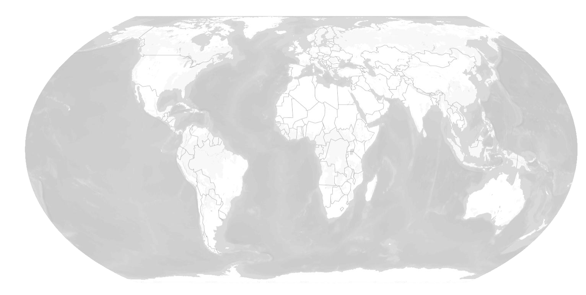
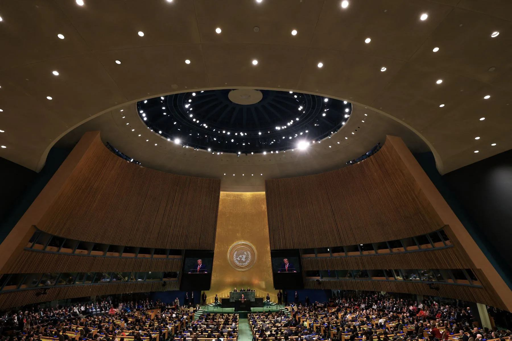

The more than 190 world leaders who came to New York for the high-level debate at last month’s UN General Assembly found a struggling organisation. Those who took to the podium – 81 presidents, 38 prime ministers, six crowned royals, and 66 other dignitaries – used the platform to discuss an array of domestic and international concerns, ranging from peace and security to climate change and artificial intelligence. They referred to both sides, only one side or partly or did not mention crises. They also mentioned UN reforms and the next Secretary General to varying degrees.
The more than 190 world leaders who came to New York for the high-level debate at last month’s UN General Assembly found a struggling organisation. Those who took to the podium – 81 presidents, 38 prime ministers, six crowned royals, and 66 other dignitaries – used the platform to discuss an array of domestic and international concerns, ranging from peace and security to climate change and artificial intelligence. Although, as usual, many leaders devoted their speeches to national priorities instead of multilateral ones, a survey of their statements offers insights into the foreign policy issues that are of greatest importance to the UN membership. Crisis Group has analysed 191 speeches delivered during this year’s General Debate to identify trends in how leaders referenced four prominent peace and security issues: Palestine, Ukraine, Sudan and UN reform. Other crises – including Syria, Haiti and Myanmar – also attracted attention, but the four issues spotlighted here dominated the global concerns raised in the debate.

Map unavailable. Showing a reference overview.
Palestine
The crisis in the Occupied Palestinian Territories was the most talked about issue of the high-level week, with 151 speakers making note of Palestine or Gaza and the West Bank only Palestine or Gaza or did not mention the conflict at all. Despite the French-Saudi joint conference on the two-state solution that took place one day before the General Debate began, the mentions in 2025 represented only a small increase from 2024, where Crisis Group tracked 146 references to either Palestine or Lebanon (the latter being the other urgent situation in the Middle East last September).
Iran/Hormuz
The conflict in Ukraine was mentioned by 106 countries, ten fewer than in 2024. Although this total represents a majority of UN member states, it is a noticeable decline from 2022 when 138 countries referenced the war. Similarly, 51 of the 106 countries that referenced Ukraine in 2025 did so without explicitly mentioning Russia, an increase from the 38 countries that followed this pattern in 2022.
Ukraine
The conflict in Ukraine was mentioned by 106 countries, ten fewer than in 2024. Although this total represents a majority of UN member states, it is a noticeable decline from 2022 when 138 countries referenced the war. Similarly, 51 of the 106 countries that referenced Ukraine in 2025 did so without explicitly mentioning Russia, an increase from the 38 countries that followed this pattern in 2022.
Sudan
The conflict in Ukraine was mentioned by 106 countries, ten fewer than in 2024. Although this total represents a majority of UN member states, it is a noticeable decline from 2022 when 138 countries referenced the war. Similarly, 51 of the 106 countries that referenced Ukraine in 2025 did so without explicitly mentioning Russia, an increase from the 38 countries that followed this pattern in 2022.
UN Reform
A total of 128 member states referred to both the UN80 and Security Council reform, partly raised, or did not mention reform issues, an increase from the 100 countries that mentioned some strand of reform efforts in 2024. Two subsets of issues stood out. First, 73 member states explicitly referenced UN80, the Secretary-General’s initiative to reform the UN through immediate cost savings, a review of inter-governmental mandates, and structural transformations to the system.
Next SG
Separately, 100 national statements mentioned the ever-present matter of Security Council reform, a continuing priority for many UN countries even as the prospect of reforming the Council’s composition (which requires member states to amend the UN Charter) appears less likely than it did in 2024, when the Biden administration devoted considerable attention to the issue.

Looking Ahead
Beyond the General Assembly podium, side events and bilateral meetings held on the margins of the General Debate showed that the UN is still a place where global commitments and important back-channel diplomacy can happen. The French-Saudi joint conference on the two-state solution featured nine new countries recognising the State of Palestine, building on the General Assembly’s overwhelming support two weeks earlier for the New York Declaration, a medium-term roadmap for peace. The Climate Summit attracted over 120 countries (including a surprise zoom message from Chinese President Xi Jinping) committed to reducing global emissions. High-level week was also the stage for a private meeting between U.S. President Donald Trump and leaders from Islamic countries, a major step in advancing the peace deal on Gaza, as well as the most cordial meeting yet between the U.S. president and Ukrainian President Zelenskyy.
Top UN officials ended high-level week without their worst-case fears of the withdrawal of the U.S. – the UN’s largest donor – coming to fruition. Secretary-General António Guterres spoke to UN staff in a closed-door town hall after the General Assembly week, striking a cautiously optimistic tone and pointing out areas from AI to climate where he felt the UN had been called to play a greater role. Notably missing was much discussion on peace and security, and some UN staff felt his remarks were out of touch with current realities. Major changes are yet to come, and many of them will not be spearheaded by this Secretary-General.
With less than fifteen months left in Guterres’s term, there was feverish discussion about who might be his successor behind the scenes. The next Secretary-General will have the challenge of seeing through many difficult reforms of the system. He or she will also shape how the UN engages with crises like Gaza, Ukraine and Sudan, and will be taking signals from member states whose speeches at the General Assembly and other for a show where global opinion is heading.